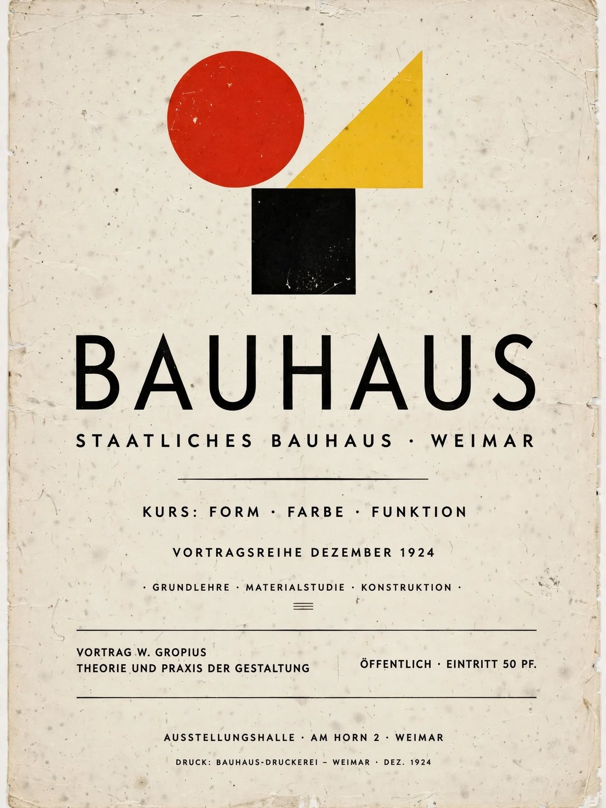
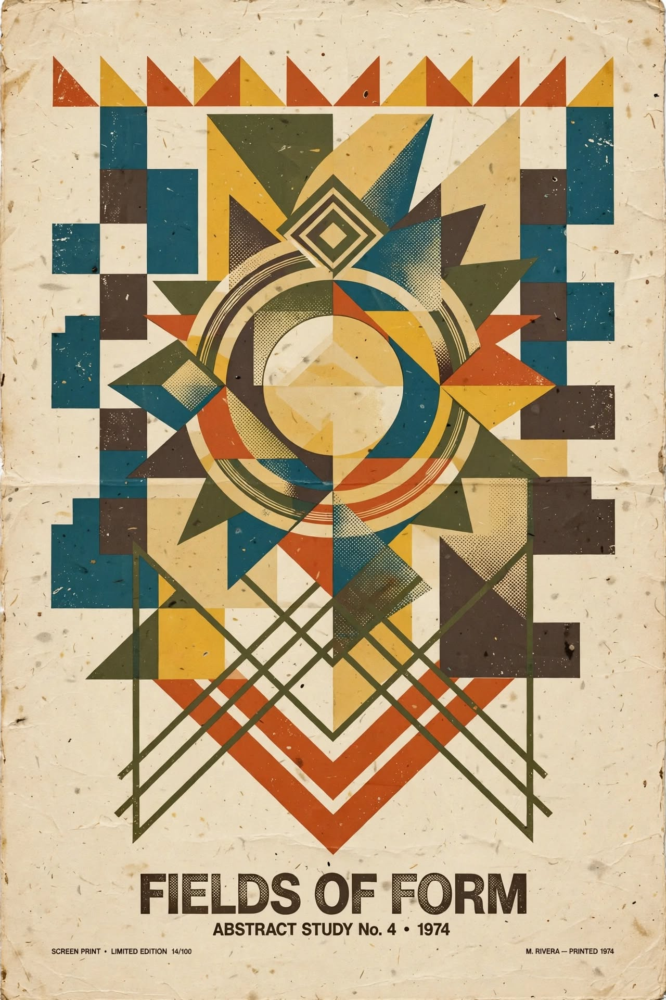
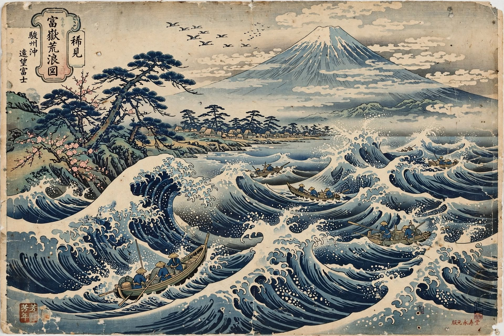
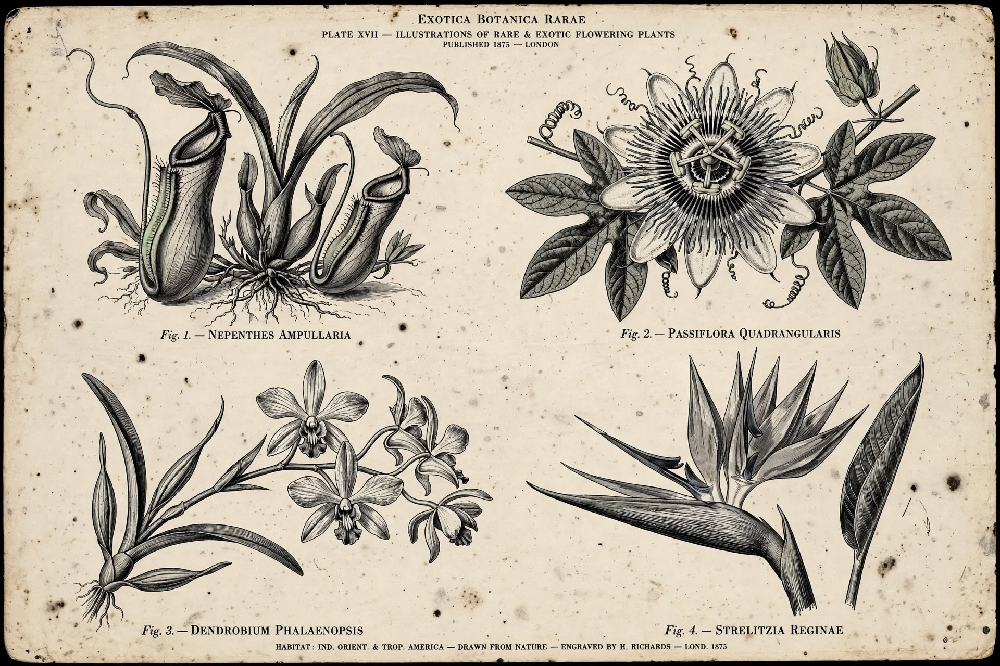

001 — Bauhaus Poster 1923
Bauhaus • Poster • Geometric • Typography • CC0
002 — Art Nouveau 1969 (substituto)
Psychedelic • Concert Poster • 1960s • Typography • CC0

003 — Bauhaus Study 1928 (substituto)
Abstract • Geometric • Screen Print • 1970s • CC0

004 — Ukiyo-e Wave 1831
Ukiyo-e • Mount Fuji • Wave • Japanese Print • CC0

005 — Botânica 1882
Botanical • Engraving • Flower • Vintage Illustration • CC0